La app de reparto para transportistas
Pedidos, ruta, entregas, facturas y cobros en el móvil del transportista. Funciona sin cobertura y trabaja sobre la misma hoja de pedidos que ya usa la oficina.
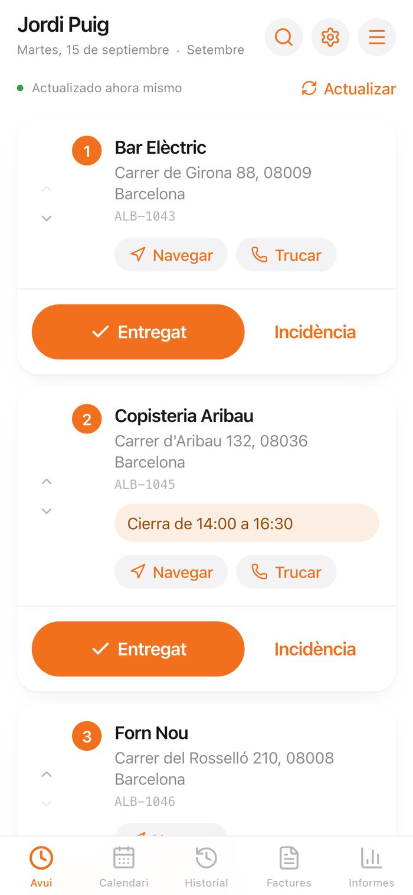
El punto de partida
Si repartes, seguro que te suena. Los pedidos llegan en una hoja de cálculo o por WhatsApp, la ruta la montas de cabeza en el primer semáforo y a final de mes toca sentarse con la libreta para saber qué facturar. Nada de eso es repartir, pero se come horas cada semana.
Esta semana
Ordenas las paradas de memoria. Un mal orden son kilómetros de más, gasoil y la tarde que se alarga.
La hoja de la empresa, los mensajes, las notas del móvil, un papel en la guantera. Tarde o temprano uno se queda sin entregar.
Apuntas la entrega en papel porque en el polígono no hay cobertura y por la noche la pasas a la hoja. Si se te olvida, nadie se entera.
La oficina no ve cómo va el reparto, así que cada duda es una llamada mientras conduces.
Repasar entregas, sumar importes, calcular IVA e IRPF y numerar a mano. Un despiste y la factura sale mal o tarde.
¿Esa factura está cobrada o solo enviada? Sin un sitio donde mirarlo, el dinero pendiente se queda por el camino.
El resultado: horas de papeleo en vez de reparto, entregas que se pierden entre mensajes y facturas que se cobran tarde, o no se cobran.
La solución
Reparto recoge los pedidos de la hoja de Google de siempre, calcula el orden de paradas más corto y deja que el transportista marque cada entrega en el momento, con o sin cobertura. Con eso ya tiene su factura hecha y sabe qué le falta por cobrar. La oficina no cambia nada de lo que hace: sigue viendo la misma hoja, pero ahora actualizada sola.
Llega a la hoja o lo creas en la app
Lo asignas a un día
Orden más corto, con Google Maps
Entregado o incidencia, con hora
PDF numerado con IVA e IRPF
Emitida, enviada o cobrada
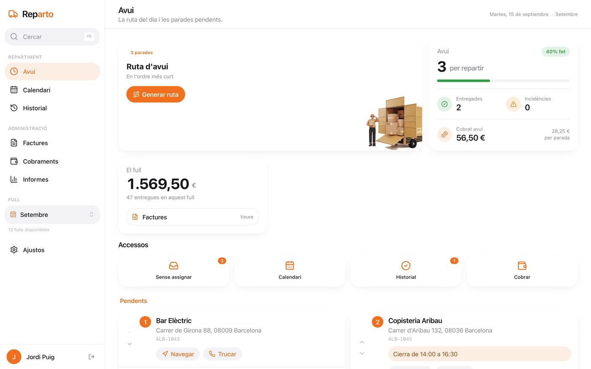
«Abro la app, veo qué me toca, sigo el orden y marco cada entrega en la puerta. A fin de mes, la factura ya está hecha.»
Así es un día con Reparto: nada de pasar datos de un sitio a otro por la noche.
Una furgoneta y muchas paradas. Quiere repartir, no pelearse con hojas de cálculo ni facturas.
De 2 a 5 conductores. Cada uno entra con su código y ve solo sus pedidos y su ruta.
Propios o subcontratados. Les hacemos un sistema a medida para controlarlos a todos desde la oficina.
Funciones principales
Así se ve
La misma app en el ordenador de casa, el iPad de la oficina o el móvil de la furgoneta. Letra grande, botones grandes y todo a dos toques.
Panel principal. Lo que queda por repartir, lo cobrado hoy y lo facturado en el mes.
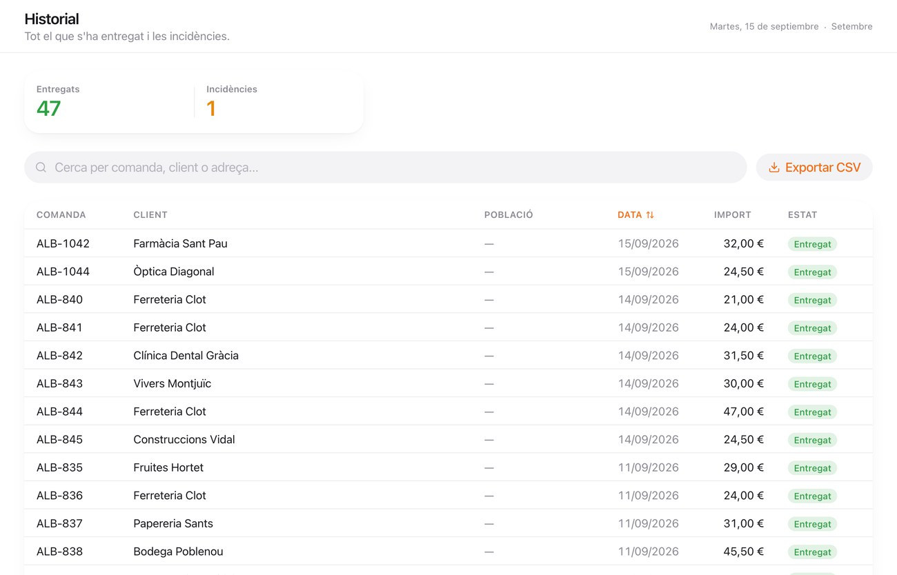
Pedidos y clientes. Cada entrega con su cliente, fecha e importe. Con buscador y exportación.
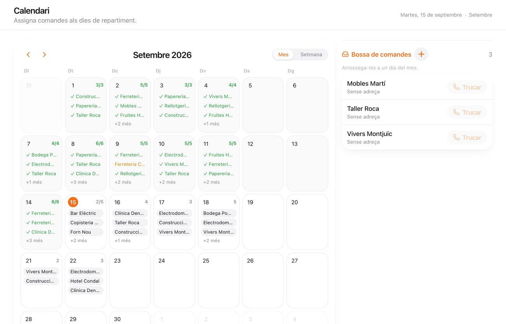
Calendario y bolsa de pedidos. Los pedidos sin día esperan a la derecha hasta que los asignas.
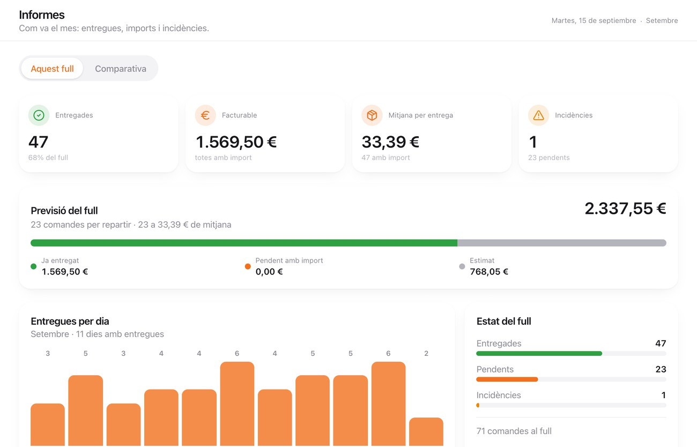
Informes del mes. Entregas por día, facturación, media por entrega e incidencias.
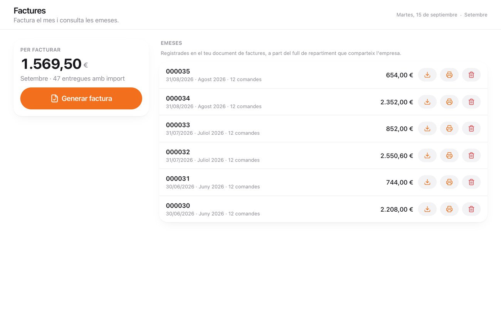
Facturas. Lo que falta por facturar y las facturas emitidas, listas para descargar.
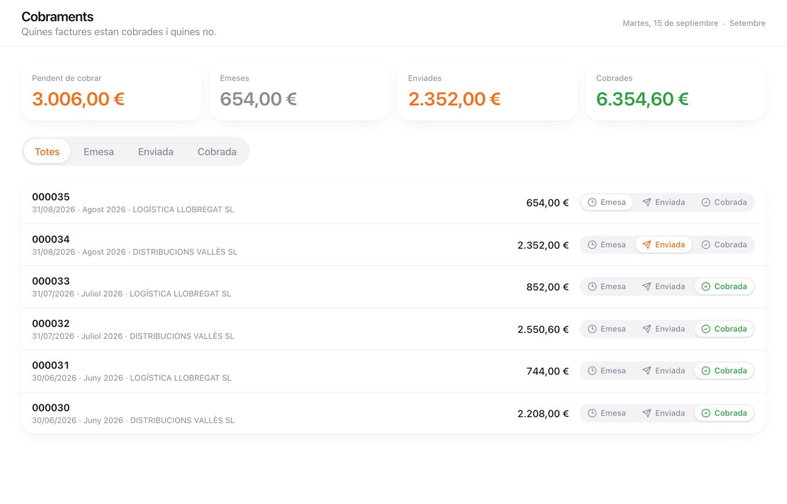
Cobros. Qué está pendiente, qué se ha enviado y qué ya está en el banco.
Ejemplo de una operación habitual
Así trabaja Jordi, transportista con una furgoneta y unas veinte paradas al día en Barcelona. Todo lo que ves son pantallas reales de la app.
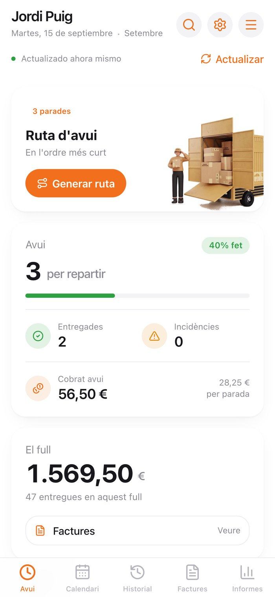
Ve de un vistazo cuántas paradas le quedan y cuánto lleva cobrado hoy.
Las paradas salen ordenadas. Navegar abre Google Maps; Trucar llama al cliente.
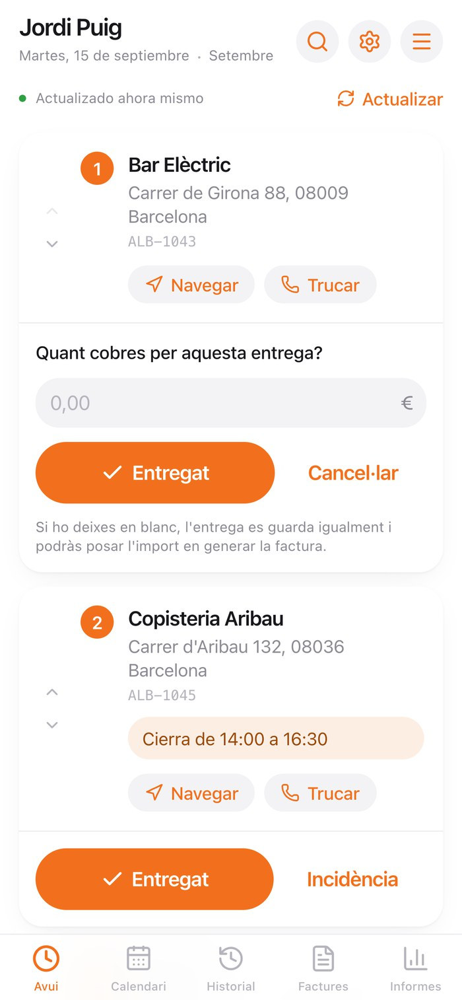
Toca Entregat, apunta el importe y listo. Sin cobertura se guarda y se sube después.
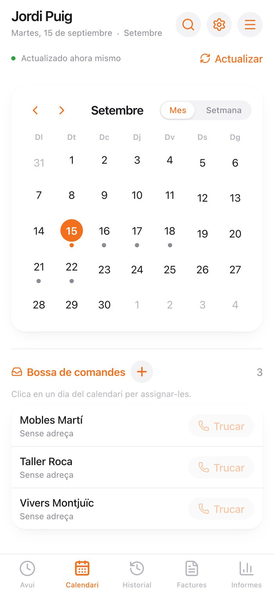
Desde el calendario reparte los pedidos pendientes entre los próximos días.
Y a final de mes
La factura sale sola
Abre Facturas y pulsa Generar factura. La app monta el PDF con todas las entregas del mes, sus importes, IVA e IRPF, y le pone el número que toca. Después la marca como enviada y, cuando le pagan, como cobrada.
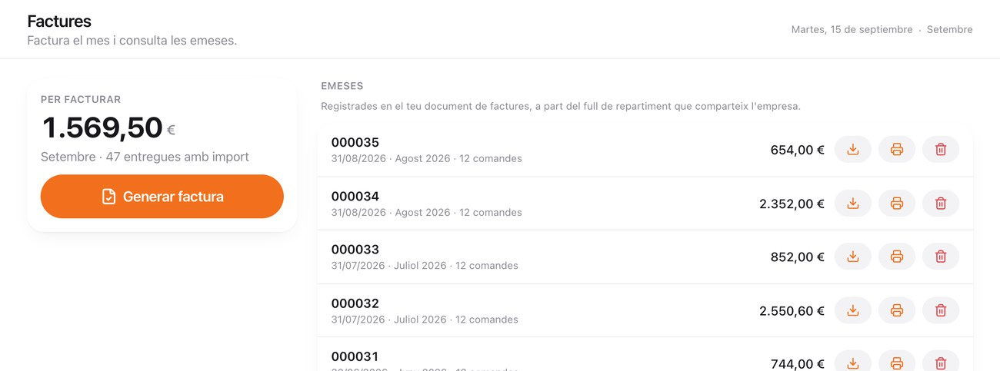
Para empresas con más de un transportista
Si llevas una flota o trabajas con autónomos subcontratados, adaptamos Reparto a tu forma de trabajar. Desde la oficina ves en tiempo real cómo va cada conductor, repartes los pedidos entre ellos y controlas entregas, incidencias y cobros sin hacer ni una llamada.
Ejemplo de panel a medida
| Transportista | Progreso | Ahora | Estado |
|---|---|---|---|
| JPJordi PuigEixample | Forn Nou | En ruta | |
| MRMarta RuizSants | — | Terminado | |
| ÀFÀlex FerrerZona Franca | Vivers Montjuïc | 1 incidencia | |
| PCPau CostaGràcia · autónomo | Clínica Verdi | Sin cobertura | |
| LSLaia SerraPoblenou | Bodega Pobl. | 1 incidencia |
Quién va por dónde, qué le queda y qué ha pasado hoy.
Asignas y mueves pedidos de un transportista a otro desde la oficina.
Oficina, jefe de tráfico y conductor, cada uno con lo que le toca ver.
Para saber qué rinde, qué cuesta y dónde se atasca el reparto.
Tu ERP, tu web o tu programa de facturación, sin teclear dos veces.
Tu logo y tus colores en la app de todos tus transportistas.
Beneficios
La ruta se calcula sola y la factura sale de las entregas ya marcadas. Se acabó pasar datos de un sitio a otro.
Paradas en el orden más corto, calculado con Google Maps, en lugar de a ojo.
Cada entrega se marca en la puerta, con su hora e importe. No depende de acordarse por la noche.
En sótanos, polígonos o pueblos la app sigue funcionando y lo sube todo cuando vuelve la cobertura.
El móvil en la furgoneta, el ordenador en casa o el iPad en la oficina. Siempre los mismos datos.
Pedidos, ruta, calendario, facturas y cobros en el mismo sitio, no en cinco herramientas distintas.
Ves qué facturas están emitidas, enviadas o cobradas, y nada pendiente se te olvida.
La hoja se actualiza sola con cada entrega, así que la oficina lo ve sin tener que preguntar.
Cuenta rápida
Tiempo que recuperas cada semana
≈ 2 h 35 min
Estimación orientativa para un transportista con unas 20 paradas diarias. Cada caso es distinto.
Cómo funciona
Conectamos la app a tu hoja de pedidos de Google (o te creamos una), damos de alta tus datos fiscales y un código con PIN para cada transportista.
Lo hacemos nosotros
Tú solo nos das acceso a la hoja y tus datos de facturación.
Pedidos, clientes y precios. Si ya trabajas con Google Sheets no hay nada que importar: la app lee tu hoja tal como está, aunque las columnas estén en catalán o en otro orden.
Tu hoja no cambia
La oficina sigue trabajando exactamente igual que hasta ahora.
Cada transportista recibe un enlace por WhatsApp, entra una vez con su código y su PIN, y la añade a la pantalla de inicio. La sesión dura un año.
Sin App Store
Funciona en iPhone y Android, como cualquier otra app.
Informes, facturas y cobros desde el panel, en el móvil o en el ordenador. Sin montar nada a mano a final de mes.
Siempre al día
Cada entrega marcada aparece al momento en informes y en la hoja.
Del primer contacto a la primera ruta: normalmente, en menos de un día.
Los sistemas a medida para flotas se planifican contigo por fases.
Planes y precios
Para el transportista autónomo que empieza.
59 €39 €/mes
+ 199 € de pago inicial
1 transportista
Empezar
Para quien factura cada mes o lleva una pequeña flota.
99 €75 €/mes
+ 399 € de pago inicial
Hasta 5 transportistas
Pedir demostración
Para empresas con varios transportistas.
A medida
Presupuesto cerrado según tu flota
Transportistas ilimitados
Hablemos
Precios promocionales, IVA no incluido. Facturación mensual y sin permanencia. El pago inicial se abona una sola vez al contratar y cubre la instalación, la conexión con tu hoja de pedidos, el alta de los transportistas y la formación. El plan Empresa se presupuesta según el número de transportistas y las integraciones que necesites.
Empieza con el Básico. Si además facturas cada mes desde la app, el Profesional te ahorra montar la factura a mano.
El Profesional: cada uno con su acceso y sus pedidos, y tú con los informes y los cobros de todos.
El plan Empresa. Nos sentamos contigo, vemos cómo trabajáis y te presupuestamos el sistema a medida.
Soporte y condiciones
Dejamos la app conectada a tu hoja, con tus datos fiscales y los accesos de cada transportista, lista para repartir.
Una sesión corta, en persona o por videollamada. La app se aprende en una mañana de reparto.
Por email o WhatsApp según tu plan. Hablas con quien hace la app, no con un centro de llamadas.
Mejoras y correcciones se instalan solas, sin coste y sin que tengas que tocar nada.
Pruébala con tus pedidos reales antes de decidir. Sin compromiso.
Te das de baja cuando quieras, sin permanencia. Tus datos ya están en tu hoja de Google: te los quedas.
Tus pedidos viven en tu propia cuenta de Google, no en un servidor ajeno. Cada transportista entra con su código y PIN, las conexiones van cifradas y tus precios se guardan en un documento privado aparte. Tratamiento conforme al RGPD.
Pídenos una demostración con tu propia hoja de reparto. En media hora ves si encaja con tu día a día, tengas una furgoneta o veinte.